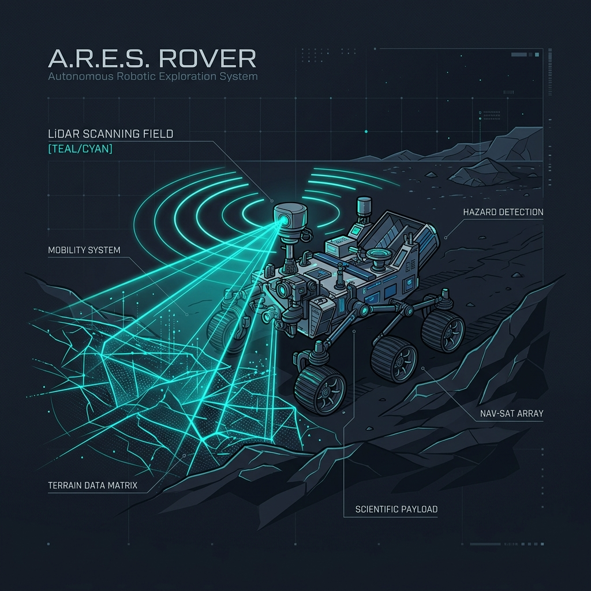
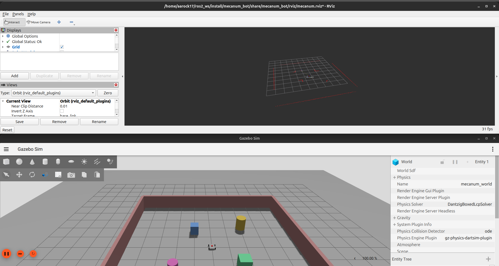
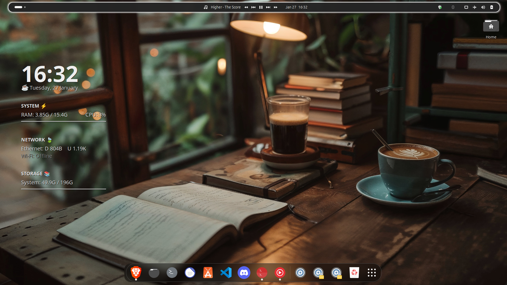

Amin Ahmed G
Building the intelligence and control layers for next-generation autonomous systems.
Robotics Software Engineer student specializing in control loops, robot kinematics, SLAM, and real-time firmware development.
About Me

Bridging Software & Physical Systems
I am a final-year B.E. Robotics & Automation student at Anna University (Expected 2027) with a deep passion for the mathematics and architectures behind robot locomotion and automation.
My work spans from writing low-overhead firmware running under 1ms on STM32 microcontrollers, to modeling complex SLAM simulations in ROS 2 Jazzy and Gazebo Harmonic. I am especially interested in the security of robotic communication networks (RoboShield project) and tuning controllers for AGV/AMR warehouse deployments.
B.E. Robotics and Automation
Anna University — Chennai, India (Expected 2027)
Key Coursework: Control Systems, Robot Kinematics, Embedded C, Sensors & Instrumentation, Microprocessors
Technical Expertise
Robotics is multidisciplinary. Here is my stack spanning software, hardware, and design.
Frameworks & Middleware
- ROS 2 (Jazzy, Humble)Intermediate
- Gazebo (Harmonic, Classic)Intermediate
- Nav2 & Navigation StackIntermediate
- SLAM (Cartographer, Gmapping)Intermediate
- MoveIt (Motion Planning)Familiar
Languages
- C / C++ (Embedded Focus)Intermediate
- PythonIntermediate
- RustIntermediate
- Bash ScriptingIntermediate
- CODESYS Ladder LogicIntermediate
Hardware & Controls
- STM32 & ARM Cortex-MIntermediate
- ESP32 & Raspberry PiIntermediate
- PID Control TuningIntermediate
- UART, I2C, SPI, CANIntermediate
- Sensors & InstrumentationIntermediate
Design & Tools
- SolidWorks / Fusion 360Intermediate
- EasyEDA / KiCad (PCB Layout)Intermediate
- Linux (Ubuntu / Hyprland)Intermediate
- Docker & Git WorkflowIntermediate
- STM32CubeIDE & CODESYSIntermediate
Work Experience
Practical hands-on experience in autonomous mobile robots, simulations, cobots, and UAV architectures.
Karthikesh Robotics (KKR)
Robotics Intern | Chennai, IndiaDeveloped Gazebo (gz) physics simulations and Autonomous Mobile Robot (AMR) project configurations. Configured multi-robot navigation topologies and evaluated sensor integration workflows for real-time mobile platforms.
Robonetics Automation Solutions LLP
Robotics Intern | Chennai, IndiaGained hands-on experience working with industrial JAKA cobots (collaborative robots) in AGV/AMR deployment. Designed mounting assemblies using SolidWorks and witnessed how autonomous mobile vehicles coordinate workflows inside a live warehouse environment.
Drone Technology Internship
Intern | NSIC Technical Services Centre, ChennaiStudied UAV construction fundamentals. Assembled and disassembled carbon-fiber agricultural drone frames. Performed basic parts modeling using CATIA and reviewed battery chemistry and payload kinematics.
Event Organizer
Line Follower Robot Competition | UniversityDrafted the official competition rulebook, designed the path geometries and checkpoint configurations, and oversaw track construction for the university's annual Line Follower Robot race.
Linux System Optimization
Personal Workstation SetupEngineered and customized my own Ubuntu / Hyprland tiling window manager environment. Optimized to achieve minimal RAM overhead (~600MB at idle) and low process latency to maximize computational resources for heavy robotics simulations.
Control Systems Lab
A live interactive PID tuning simulator. Drag the sliders to see how gains affect the trajectory of a line follower robot.
PID Gain Tuning
Formulate steering: \(u(t) = K_p e(t) + K_i \int e(t)dt + K_d \frac{de(t)}{dt}\)
Projects
Key engineering projects from my academic research and GitHub repositories.
AMR Leader-Follower Robot System
A multi-robot Autonomous Mobile Robot (AMR) formation control system featuring 4-wheel drive kinematics in Gazebo Harmonic, dynamic TF frame tracking, EKF sensor fusion (robot_localization), obstacle avoidance, Nav2 AMCL localization, and an interactive web control dashboard.

Mecanum Bot Simulator
A 4-wheel kinematic mecanum drive robot simulation running in ROS 2 Jazzy and Gazebo Harmonic. Integrates LiDAR, SLAM (Cartographer), Nav2, and custom gz_ros2_control nodes.
Two-Wheel Differential Bot
Autonomous differential drive mobile robot simulated in ROS 2 Jazzy and Gazebo Harmonic. Features LiDAR sensor plugins, joint state broad-casters, Gazebo diff-drive controllers, and Python waypoint navigation.
RoboShield: RTPS NIDS & Firewall
A lightweight, real-time intrusion detection system and inline packet filter for ROS 2 networks. Parses wire-level RTPS submessages, tracks node publication frequencies, and blocks malicious attacks using NFQUEUE with under 2 microseconds of overhead.

Ubuntu System Monitor (Conky)
A highly customized, lightweight system monitor widget for Ubuntu 24.04/Hyprland environment optimized to display CPU/GPU temperature, core loading, and memory overhead during heavy ROS 2 Gazebo loads.
Get In Touch
Let's collaborate on robotics software, control system designs, or embedded solutions.
Contact Information
Feel free to reach out to me for internship opportunities, research collaborations, or simply to talk about ROS 2!